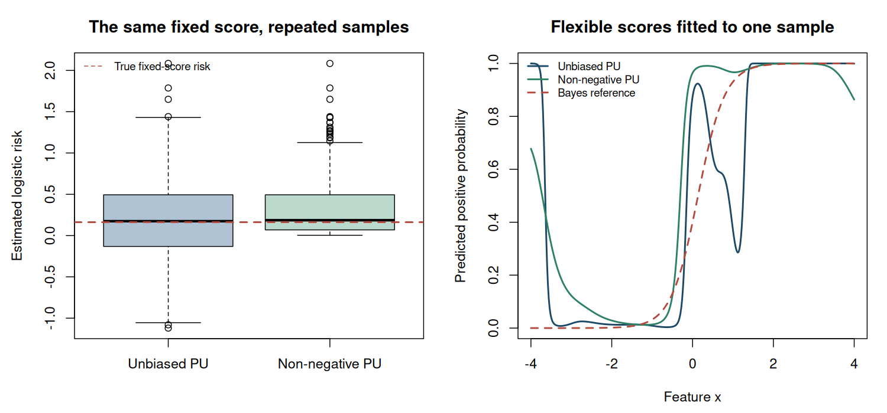

4. PU estimation, overfitting, and sensitivity#
Topics of Statistical Learning · Week 4
An unbiased objective can still be difficult to minimize#
The PU identity from Chapter 3 expresses risk as the sum of a positive-class contribution and a difference of two expectations. Population non-negativity does not prevent the empirical difference from becoming negative. A flexible score can exploit this difference by assigning very large positive scores to the observed positives without behaving similarly on future positives.
This chapter separates three questions: whether a risk estimator is unbiased for a fixed rule, whether minimizing it produces a useful fitted rule, and whether the sampling assumptions represent the application. These are related questions, but none is a substitute for the others.
The non-negative risk correction#
Write the empirical risk as \(\widehat A(g)+\widehat B(g)\), where
For a non-negative loss, the population quantity \(B(g)=(1-\pi)E_-\ell_-\) is non-negative. The non-negative PU estimator replaces its empirical version by
The correction applies to the estimated negative-class contribution, not simply to the total empirical risk. It prevents that contribution from rewarding the learner for becoming arbitrarily negative. The regularizer, score class, and numerical optimizer remain separate choices.
Worked example 4.1 — Where the correction acts
Use zero–one loss and a supplied prior \(\pi=0.4\). Suppose the positive sample has error rate \(0.10\), so the same observations evaluated as negative have loss \(0.90\). Suppose \(30\%\) of the marginal unlabelled sample is predicted positive. Then
The unbiased empirical expression is \(-0.02\), whereas the non-negative expression is \(0.04\). Clipping the total expression at zero would instead give zero, a different estimator. None of these numbers reveals the unknown true risk of this particular fitted classifier without further assessment.
Bias, variance, and consistency are different properties#
For a fixed rule under the known-prior model,
Consequently, its expectation is at least the true risk whenever the original estimator is unbiased and the expectations exist. The correction generally introduces finite-sample upward bias. It can nevertheless improve mean squared error or the quality of the learned model. Such improvements depend on conditions; non-negative correction does not dominate every alternative in every finite sample.
For a fixed \(g\), laws of large numbers for the relevant empirical averages and continuity of \(b\mapsto\max(0,b)\) imply consistency when \(B(g)\geq0\). A statement about a learned \(\widehat g\) also needs control over the function class and optimization. Pointwise consistency for each fixed rule does not automatically justify minimization over an unrestricted set of rules.
Under independent positive and marginal samples, the variance of the unbiased fixed-rule estimator is
The two positive-class averages use the same observations. Keeping their covariance through \(\ell_+-\ell_-\) is essential. This formula changes if the samples overlap or the prior is estimated. For the non-negative estimator, the maximum creates an additional nonlinearity, so a normal approximation should not be assumed without checking its justification.
Sensitivity to the supplied class prior#
Suppose the target has true prior \(\pi\), but the population correction uses \(\widetilde\pi\). For a fixed rule and unchanged positive and marginal distributions,
This is a misspecified correction for the same target distribution. It should not be confused with deliberately changing the target population’s prevalence while also using the appropriate target distribution.
Worked example 4.2 — An incorrect prior can make the risk look smaller
A classifier has sensitivity and specificity both equal to \(0.8\), and the target prior is \(0.3\). Its true risk is \(0.20\). The relevant quantities are \(E_+\ell_+=0.2\), \(E_+\ell_-=0.8\), and \(E_U\ell_-=0.38\).
The correct expression is \(0.3(0.2)+0.38-0.3(0.8)=0.20\). Substituting \(\widetilde\pi=0.45\) gives \(0.11\). The discrepancy is
The negative-class contribution is still positive in this example, so non-negative correction does not fix the prior error. A numerical safeguard and a correct observation model solve different problems.
Feature-dependent positive selection#
In a single partially labelled population sample, let
If \(e(x)\) varies, the observed positives need not represent \(P_+\). When the propensity is known and positive wherever positive observations can occur, a useful identity is
At any zero-propensity point with zero positive-class probability, define \(S/e(X)=0\); positive-support positivity rules out zero propensity where the positive class can occur. To verify the identity, condition on \((X,Y)\). The expectation of \(S/e(X)\) is one for positives and zero for negatives. The baseline negative loss is therefore replaced by the positive loss exactly when the latent class is positive.
Small propensities can amplify variability. An unknown propensity is not automatically identified from PU observations: \(P(S=1\mid X)=e(X)P(Y=+1\mid X)\) can admit multiple factorizations. The feature-dependent-selection literature supplies additional assumptions and estimation methods, not a general exemption from identification questions. Regions with zero positive labelling probability require further information or restrictions.
Designing a useful evaluation#
A simulation should distinguish the learner’s information from the evaluator’s information. The learner receives the positive and marginal samples and a stated prior. The evaluator can use latent classes on a new sample because the simulation generated them. A fully labelled training method is an oracle benchmark, not an available PU competitor.
Vary one consequential assumption at a time: positive sample size, prior accuracy, positive-selection bias, or score flexibility. Report prediction error and an appropriate score loss, not only the optimized training objective. Repeat the whole fitting procedure to assess variability across training datasets. With genuine PU validation data, use a justified risk estimator and its uncertainty rather than silently treating unknown labels as negatives.
Separate three sources of failure in an experiment#
A useful sensitivity study varies one component at a time. First hold the sampling model and prior correct while increasing model flexibility: this probes empirical overfitting. Next keep the rule class fixed and change the supplied prior: this probes prior sensitivity. Finally make positive selection depend on features: this challenges representativeness.
Keep the final labelled evaluation population fixed across those comparisons. Report prediction error, the estimated positive and negative risk components, and how often the non-negative correction activates. If changing a prior also changes the test population, the experiment confounds a method change with a target change.
Laboratory — Fixed-rule bias and fitted-rule behaviour#
Part A repeatedly estimates the logistic risk of one fixed Bayes score. It reports bias, standard deviation, mean squared error, and how often the negative contribution is clipped. Part B fits flexible radial-basis scores with the unbiased and non-negative objectives, using the same parameter bounds, regularizer, and three deterministic starts. It reports optimizer status and independent test performance.
The finite parameter bounds and multiple starts are implementation choices. They do not certify a global minimum. The fixed-rule experiment and the fitted-rule comparison answer different questions and should be interpreted separately.
Code
# Topics of Statistical Learning
# Lab 04: nnPU bias, variability, and flexible-model fitting
# Base R only. Run with: Rscript 04-pu-practice.R
set.seed(2026102104)
prior <- 0.4
positive_mean <- 1.5
negative_mean <- -1.5
softplus <- function(z) pmax(z, 0) + log1p(exp(-abs(z)))
sample_population <- function(n) {
y <- rbinom(n, 1L, prior)
list(x = rnorm(n, ifelse(y == 1L, positive_mean, negative_mean)), y = y)
}
bayes_score <- function(x) qlogis(prior) + 3 * x
true_fixed_risk <- prior * integrate(function(x) {
softplus(-bayes_score(x)) * dnorm(x, positive_mean)
}, -Inf, Inf)$value + (1 - prior) * integrate(function(x) {
softplus(bayes_score(x)) * dnorm(x, negative_mean)
}, -Inf, Inf)$value
# Part A: the score is fixed before every sample is generated.
n_rep <- 1000L
fixed_estimates <- matrix(NA_real_, n_rep, 3L,
dimnames = list(NULL, c("uPU", "nnPU", "negative_part")))
for (b in seq_len(n_rep)) {
gp <- bayes_score(rnorm(18L, positive_mean))
gu <- bayes_score(sample_population(60L)$x)
positive_part <- prior * mean(softplus(-gp))
negative_part <- mean(softplus(gu)) - prior * mean(softplus(gp))
fixed_estimates[b, ] <- c(positive_part + negative_part,
positive_part + max(0, negative_part), negative_part)
}
fixed_summary <- do.call(rbind, lapply(1:2, function(j) {
value <- fixed_estimates[, j]
data.frame(estimator = colnames(fixed_estimates)[j], mean = mean(value),
bias = mean(value) - true_fixed_risk, SD = sd(value),
bias_MCSE = sd(value) / sqrt(n_rep),
MSE = mean((value - true_fixed_risk)^2))
}))
cat("PART A: fixed-rule logistic risk\n")
cat("Numerically integrated reference risk:", true_fixed_risk, "\n")
print(fixed_summary, digits = 5, row.names = FALSE)
cat("Fraction with negative estimated negative-class contribution:",
mean(fixed_estimates[, "negative_part"] < 0), "\n")
# Part B: fit scores using only P and marginal U data.
x_positive <- rnorm(30L, positive_mean)
unlabelled <- sample_population(300L)
centres <- seq(-3.5, 4, length.out = 18L)
width <- 0.30
basis <- function(x) cbind(1, exp(-outer(x, centres, "-")^2 / (2 * width^2)))
zp <- basis(x_positive)
zu <- basis(unlabelled$x)
ridge <- 1e-4
components <- function(beta) {
gp <- drop(zp %*% beta)
gu <- drop(zu %*% beta)
c(positive = prior * mean(softplus(-gp)),
negative = mean(softplus(gu)) - prior * mean(softplus(gp)))
}
fit_objective <- function(nonnegative) {
objective <- function(beta) {
parts <- components(beta)
parts[1] + if (nonnegative) max(0, parts[2]) else parts[2]
}
penalized <- function(beta) objective(beta) + ridge * sum(beta^2)
gradient <- function(beta) {
pp <- plogis(drop(zp %*% beta))
pu <- plogis(drop(zu %*% beta))
grad_positive <- prior * drop(crossprod(zp, pp - 1)) / nrow(zp)
grad_negative <- drop(crossprod(zu, pu)) / nrow(zu) -
prior * drop(crossprod(zp, pp)) / nrow(zp)
use_negative <- !nonnegative || components(beta)[2] > 0
grad_positive + if (use_negative) grad_negative else rep(0, ncol(zp))
}
penalized_gradient <- function(beta) gradient(beta) + 2 * ridge * beta
starts <- list(rep(0, ncol(zp)), rep(0.1, ncol(zp)), rep(-0.1, ncol(zp)))
fits <- lapply(starts, function(start) {
optim(start, penalized, penalized_gradient, method = "L-BFGS-B",
lower = -12, upper = 12,
control = list(maxit = 2000L, factr = 1e7, pgtol = 1e-7))
})
fits[[which.min(vapply(fits, function(fit) fit$value, numeric(1L)))]]
}
fits <- list(uPU = fit_objective(FALSE), nnPU = fit_objective(TRUE))
test <- sample_population(30000L)
zt <- basis(test$x)
fitted_summary <- do.call(rbind, lapply(names(fits), function(method) {
fit <- fits[[method]]
parts <- components(fit$par)
score <- drop(zt %*% fit$par)
errors <- as.numeric((score > 0) != test$y)
data.frame(method = method, training_positive_part = parts[1],
training_negative_part = parts[2],
test_log_loss = mean(softplus(score) - test$y * score),
test_error = mean(errors), test_error_MCSE = sd(errors) / sqrt(length(errors)),
optimizer_code = fit$convergence)
}))
cat("\nPART B: flexible fitted rules, assessed on independent labelled data\n")
print(fitted_summary, digits = 5, row.names = FALSE)
cat("\nOptimizer code 0 indicates numerical convergence, not global optimality.\n")
cat("The score bounds, regularizer, and three starts are shared by both methods.\n")
cat("A single fitted-rule comparison is illustrative; repeat training for a method comparison.\n")
figure_dir <- Sys.getenv("COURSE_FIGURE_DIR", unset = "")
if (nzchar(figure_dir)) {
dir.create(figure_dir, recursive = TRUE, showWarnings = FALSE)
png(file.path(figure_dir, "04-pu-practice.png"), width = 1500,
height = 700, res = 140, type = "cairo")
par(mfrow = c(1, 2), mar = c(4.5, 4.5, 3.2, 1.2))
boxplot(fixed_estimates[, "uPU"], fixed_estimates[, "nnPU"],
names = c("Unbiased PU", "Non-negative PU"), col = c("#AFC3D4", "#BBDACD"),
ylab = "Estimated logistic risk", main = "The same fixed score, repeated samples")
abline(h = true_fixed_risk, col = "#B44A3D", lty = 2, lwd = 2)
legend("topleft", "True fixed-score risk", col = "#B44A3D", lty = 2, bty = "n", cex = 0.8)
grid <- seq(-4, 4, length.out = 401L)
predictions <- cbind(plogis(drop(basis(grid) %*% fits$uPU$par)),
plogis(drop(basis(grid) %*% fits$nnPU$par)),
plogis(bayes_score(grid)))
matplot(grid, predictions, type = "l", lwd = 2, lty = c(1, 1, 2),
col = c("#1B4965", "#2D8063", "#B44A3D"), xlab = "Feature x",
ylab = "Predicted positive probability", main = "Flexible scores fitted to one sample")
legend("topleft", c("Unbiased PU", "Non-negative PU", "Bayes reference"),
col = c("#1B4965", "#2D8063", "#B44A3D"), lty = c(1, 1, 2),
lwd = 2, bty = "n", cex = 0.8)
invisible(dev.off())
}
stopifnot(all(is.finite(fixed_estimates)),
all(fixed_estimates[, "nnPU"] >= fixed_estimates[, "uPU"] - 1e-12),
all(vapply(fits, function(fit) is.finite(fit$value), logical(1L))))
Executed laboratory output#
Output
PART A: fixed-rule logistic risk
Numerically integrated reference risk: 0.1623882
estimator mean bias SD bias_MCSE MSE
uPU 0.18347 0.021085 0.44787 0.0141629 0.20083
nnPU 0.30958 0.147196 0.30515 0.0096496 0.11469
Fraction with negative estimated negative-class contribution: 0.402
PART B: flexible fitted rules, assessed on independent labelled data
method training_positive_part training_negative_part test_log_loss test_error
uPU 0.0645723 -1.6771e+00 0.34373 0.131100
nnPU 0.0045449 -1.3524e-10 0.31576 0.093567
test_error_MCSE optimizer_code
0.0019486 0
0.0016814 0
Optimizer code 0 indicates numerical convergence, not global optimality.
The score bounds, regularizer, and three starts are shared by both methods.
A single fitted-rule comparison is illustrative; repeat training for a method comparison.


Exercises#
Prove the finite-sample upward-bias statement for a fixed rule. Does it imply worse mean squared error?
Derive the variance formula above. What goes wrong if the two positive-sample terms are incorrectly treated as independent?
Under logistic loss, simplify the prior-misspecification term. Which feature of the positive score distribution controls its magnitude?
Modify Part B to increase the positive sample size. Report both methods’ independent test losses without claiming that one must always win.
Worked solutions
1. The difference is \((-\widehat B)_+\) pointwise. Taking expectations and using \(E\widehat R_{\mathrm{PU}}=R\) gives the result. Mean squared error equals variance plus squared bias, so an increase in bias can be offset by a reduction in variance. Dominance requires additional analysis.
2. Combine the positive terms into \(\pi\widehat E_+(\ell_+-\ell_-)\) and use independence across the two samples. Separating their variances without covariance generally gives the wrong answer because the same positive observations appear twice.
3. Logistic losses satisfy \(\ell_+-\ell_-=-g(X)\), so the discrepancy is \(-(\widetilde\pi-\pi)E_+g(X)\). A large average positive-class score can make the correction sensitive to the supplied prior. This calculation holds for a fixed rule; refitting under a different prior also changes the rule.
4. Larger \(n_+\) can reduce the variability of the subtraction, but the observed comparison also depends on the marginal sample, score class, regularization, and numerical optimization. Use repeated training samples and report the comparison with Monte Carlo uncertainty.
Primary readings#
Kiryo et al. (2017), “Positive-Unlabeled Learning with Non-Negative Risk Estimator”: estimator, theory, and flexible-model experiments.
Bekker, Robberechts, and Davis (2019), “Beyond the Selected Completely At Random Assumption for Learning from Positive and Unlabeled Data”: feature-dependent labelling and the assumptions needed to learn its mechanism.
du Plessis, Niu, and Sugiyama (2015), “Convex Formulation for Learning from Positive and Unlabeled Data”: the underlying risk-correction formulation.